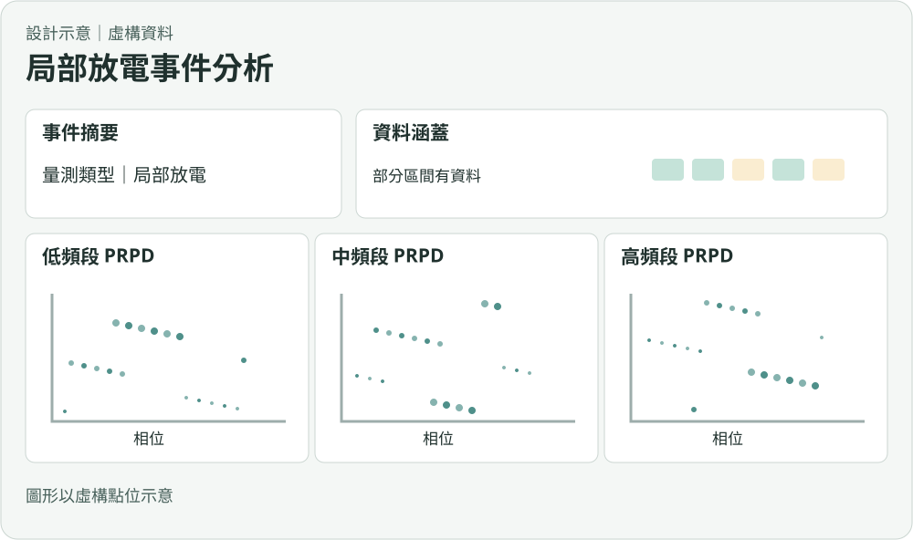

Harbor AI 2.0 子案例
局部放電事件分析
將設備告警接成可追溯的局部放電分析任務，讓使用者同時知道分析結果與資料是否完整。
- 負責範圍
- 參與平台派工、資料語意與驗證設計，與團隊串接事件窗口、波形資料及 PRPD 分析服務。
- 成果與狀態
- 完成平台派工與服務情境驗證；現行產品文件已包含事件入口、分析結果及部分完成狀態，現場端到端運行仍依版本核驗。
- 紀錄時間
- 2026 年開發及驗證紀錄
情境與目標
將設備告警接成可追溯的局部放電分析任務，讓使用者同時知道分析結果與資料是否完整。
系統架構與流程
架構說明
- 輸入
- 設備告警事件，以及陸續上傳的事件窗波形。
- 處理方式
- 依資料到達序追蹤新事件，觀察檔案集合是否穩定後派工；執行與資料完整性分別記錄。
- 產出
- 任務結果同時表達分析狀態及資料是否齊全，可呈現成功但資料部分完整。
流程圖
 分析成功可同時是資料部分完整；設備錄音與完整現場整合另作驗證。（點圖放大）
分析成功可同時是資料部分完整；設備錄音與完整現場整合另作驗證。（點圖放大）操作介面與互動
同一畫面對照事件基本資訊、資料涵蓋與三個 PRPD 頻段。圖形與狀態使用虛構資料。

設計示意｜虛構資料。事件摘要、資料涵蓋與三頻段 PRPD 放在同一畫面，便於對照資料完整度與圖形。（點圖放大）1 / 1
關鍵設計取捨
分析成功與資料完整分成兩個答案
挑戰原始波形逐檔到達，已有檔案並不代表事件資料已齊；直接派工會把局部分析包裝成完整結果。
方法與取捨以檔案集合是否穩定作派工依據，獨立保存執行狀態與資料完整性。我參與領域、派工與驗證判斷；團隊及 agents 以實際到達延遲修正等待策略，允許成功但資料部分完整。
結果平台側合併並實跑完整、部分、缺資料、溢出及多感測器情境；設備觸發錄音與後續整合仍是前提。
補傳事件要依到達序追蹤
挑戰離線設備補傳的事件可能發生得很早，依最後事件時間續掃會永久漏掉新到資料。
方法與取捨用到達序追蹤新事件，用事件時間決定分析窗口，兩者各司其職。 團隊與 agents 將續掃改成事件編號，並讓每個感測器獨立派工及終結；驗證同時檢查游標、檔數語意及統計結果。
結果在多感測器與缺資料情境核對續掃位置、檔案數量及統計語意，讓新到資料不因事件時間較舊而被忽略。
成果與驗證範圍
實際產出
完成平台派工與服務情境驗證；現行產品文件已包含事件入口、分析結果及部分完成狀態，現場端到端運行仍依版本核驗。
驗證與限制
本案例同時保留當時派工測試與後續產品文件的前端狀態；示範畫面不證明所有客戶現場的完整資料鏈或驗收。